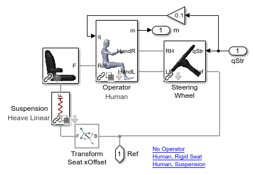
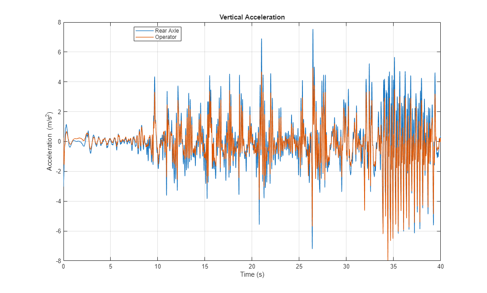
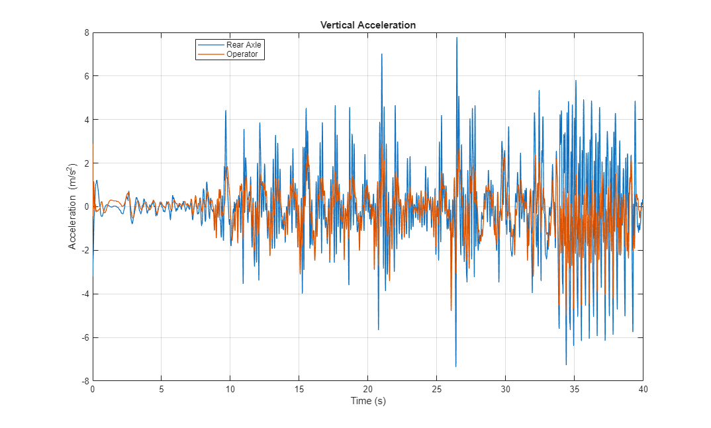
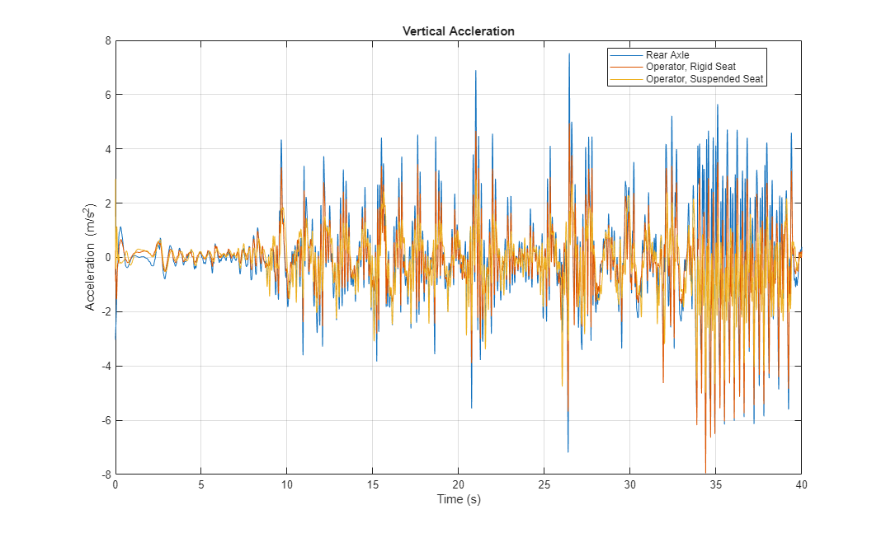

Tractor Driving on Uneven Ground

This example shows how to measure the impact of seat suspension on the operator while driving on very rough terrain.
Uneven terrain can be defined using a grid surface, which consists of a vector of x points, y points, and a 2D matrix of z-points. The grid surface block can be connected directly to the Magic Formula Tire block which models the contact between the tire and the road. In this example, we drive the tractor on uneven terrain and measure the vertical acceleration of the operator's head.
(return to Row Crop Tractor Overview)
Contents
- Model
- Tractor Model
- Tire Model: Magic Formula
- Terrain Model: Grid Surface
- Operator Model
- Simulation Results from Simscape Logging, Uneven Road: No Seat Suspension
- Simulation Results from Simscape Logging, Uneven Road: With Seat Suspension
- Simulation Results from Simscape Logging, Uneven Road: Comparison
Model
Tractor Model
The chassis, front and rear suspensions, and tires are modeled in this subsystem. The driveshafts connecting to each wheel are combined into a Simscape Bus which connects to a separate powertrain model. This allows us to combine this chassis model with any form of powertrain (two wheel drive, four wheel drive, and more).
Tire Model: Magic Formula
This subsystem models the tire. The tire is connected to the terrain which can be flat or uneven.
Terrain Model: Grid Surface
A Grid Surface block is used to model the uneven terrain.
Operator Model
The operator can be modeled as a human with joints at the hips, shoulders, elbows, and wrists. The suspension for the seat can be configured as rigid or as a linear spring damper.
Simulation Results from Simscape Logging, Uneven Road: No Seat Suspension
In this test, the tractor is driven on the uneven road and the operator is on a seat with no suspension. The vertical acceleration of the rear axle and the operator are plotted. While there is some attentuation of the acceleration via the vehicle suspension and the operators body, much of the vertical acceleration is felt by the driver.
Warning: The file containing block diagram 'sm_tractor_row_crop' is shadowed by a file of the same name higher on the MATLAB path. This can cause unexpected behavior. For more information see <a href="matlab:helpview([docroot '/toolbox/simulink/helptargets.map'], 'shadowing')">"Avoiding Problems with Shadowed Files"</a> in the Simulink documentation. The file containing the block diagram is: C:\GIT\simscape\demo\allsimscape\agriculture\tractor-row-crop\Models\Tractor\sm_tractor_row_crop.slx. The file higher on the MATLAB path is: C:\GIT\simscape\demo\allsimscape\agriculture\tractor-row-crop\Models\Tractor\Overview\sm_tractor_row_crop.m Warning: The file containing block diagram 'sm_tractor_row_crop' is shadowed by a file of the same name higher on the MATLAB path. This can cause unexpected behavior. For more information see <a href="matlab:helpview([docroot '/toolbox/simulink/helptargets.map'], 'shadowing')">"Avoiding Problems with Shadowed Files"</a> in the Simulink documentation. The file containing the block diagram is: C:\GIT\simscape\demo\allsimscape\agriculture\tractor-row-crop\Models\Tractor\sm_tractor_row_crop.slx. The file higher on the MATLAB path is: C:\GIT\simscape\demo\allsimscape\agriculture\tractor-row-crop\Models\Tractor\Overview\sm_tractor_row_crop.m
Simulation Results from Simscape Logging, Uneven Road: With Seat Suspension
In this test, the tractor is driven on the uneven road and the operator is on a seat with a suspension. The vertical acceleration of the rear axle and the operator are plotted. The seat suspension attentuates a good portion of acceleration transmitted to the chassis through the suspension.
Warning: The file containing block diagram 'sm_tractor_row_crop' is shadowed by a file of the same name higher on the MATLAB path. This can cause unexpected behavior. For more information see <a href="matlab:helpview([docroot '/toolbox/simulink/helptargets.map'], 'shadowing')">"Avoiding Problems with Shadowed Files"</a> in the Simulink documentation. The file containing the block diagram is: C:\GIT\simscape\demo\allsimscape\agriculture\tractor-row-crop\Models\Tractor\sm_tractor_row_crop.slx. The file higher on the MATLAB path is: C:\GIT\simscape\demo\allsimscape\agriculture\tractor-row-crop\Models\Tractor\Overview\sm_tractor_row_crop.m Warning: The file containing block diagram 'sm_tractor_row_crop' is shadowed by a file of the same name higher on the MATLAB path. This can cause unexpected behavior. For more information see <a href="matlab:helpview([docroot '/toolbox/simulink/helptargets.map'], 'shadowing')">"Avoiding Problems with Shadowed Files"</a> in the Simulink documentation. The file containing the block diagram is: C:\GIT\simscape\demo\allsimscape\agriculture\tractor-row-crop\Models\Tractor\sm_tractor_row_crop.slx. The file higher on the MATLAB path is: C:\GIT\simscape\demo\allsimscape\agriculture\tractor-row-crop\Models\Tractor\Overview\sm_tractor_row_crop.m
Simulation Results from Simscape Logging, Uneven Road: Comparison
Comparing the results of the two tests, we can see the impact of the seat suspension on the comfort of the operator.
